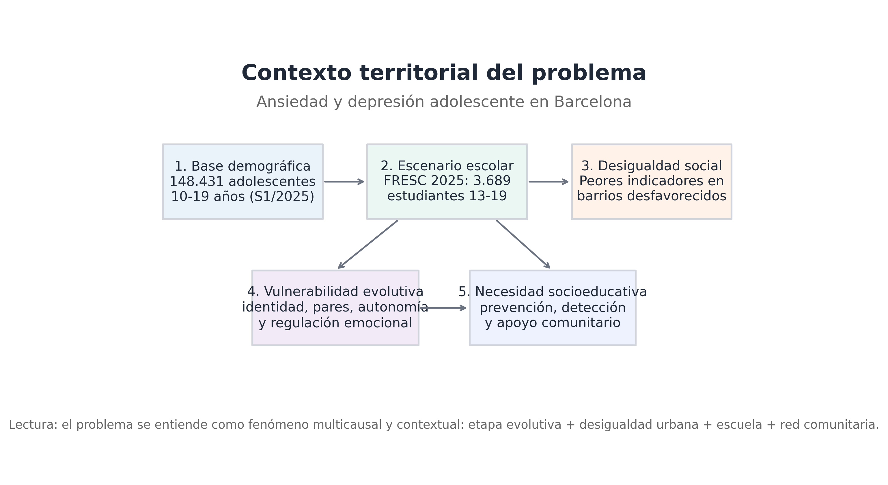

Población base
148.431
adolescentes 10-19 años
Detectar
Acompañar
Fortalecer
Derivar
Lectura ejecutiva
Indicadores clave
Matriz de cumplimiento UNIR
01
Contexto

Territorio vivo
Escuela, comunidad y red de proximidad
La intervención se ancla en espacios reales del distrito: centro educativo, parque comunitario y equipamientos vinculados a la salud mental de proximidad.


02
Problema y datos
03
Desigualdad
04
Justificación
Necesidad social
05
Marco teórico
Factores de riesgo
Factores de protección
06
Objetivos
Objetivo general
07
Destinatarios
Criterios de acceso
Señales priorizadas
Priorización
08
Metodología
Detectar
Acompañar
Fortalecer
Derivar
Estrategias metodológicas
09
Actividades
Tres módulos conectados para alfabetización emocional, apoyo entre iguales y red comunitaria.
10
Impacto
11
Presupuesto
Distribución ajustada al máximo de 20.000 € definido por la convocatoria.
| Partida | Descripción | Importe |
|---|---|---|
| Total | ||
12
Referencias APA
Referencias completas extraídas del borrador principal.
13
Aprendizajes del grupo
Registro de acciones y aprendizajes alineado con la rúbrica de la actividad.